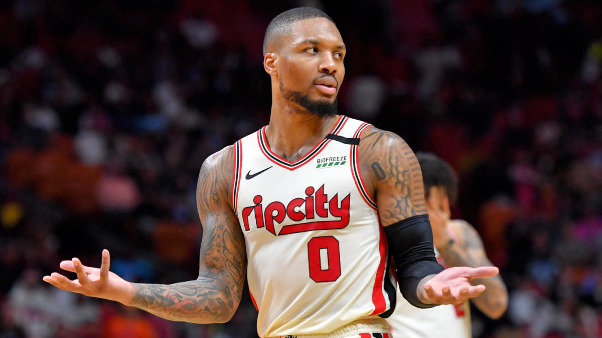

TOP 10 NBA PLAYERS THIS 2021 SEASON
10. Nikola Jokic
BORN: 19 February 1995 (age 25 years), Sombor, Serbia
NBA DRAFT: 2014 / Round: 2 / Pick: 41st overall
PLAYING CAREER: 2012–present
LISTED HEIGHT: 6 ft 11 in (2.11 m)
LEAGUE: NBA
CURRENT TEAMS: Denver Nuggets (#15 / Power forward, Center), Serbia national basketball team (#15), Serbia
AWARDS: All-NBA Team, NBA All-Rookie Team
9. James Harden

Born: 26 August 1989 (age 31 years), Bellflower, California, United States
Current team: Brooklyn Nets (#13 / Point guard, Shooting guard)
NBA draft: 2009 / Round: 1 / Pick: 3rd overall
Playing career: 2009–present
Awards: NBA Most Valuable Player Award, All-NBA Team, MORE
Education: Artesia High School, Audubon Middle School, Arizona State University
Movies: The Drew: No Excuse, Just Produce
8. Stephen Curry
Born: 14 March 1988 (age 32 years), Akron, Ohio, United States
Spouse: Ayesha Curry (m. 2011)
Current team: Golden State Warriors (#30 / Point guard, Shooting guard)
NBA draft: 2009 / Round: 1 / Pick: 7th overall
Children: Riley Elizabeth Curry, Canon W. Jack Curry, Ryan Carson Curry
Awards: NBA Most Valuable Player Award, All-NBA Team, MORE
7. Damian Lillard

Born: 15 July 1990 (age 30 years), Oakland, California, United States
Current team: Portland Trail Blazers (#0 / Point guard)
NBA draft: 2012 / Round: 1 / Pick: 6th overall
Movies: Space Jam: A New Legacy
Awards: NBA Rookie of the Year Award, All-NBA Team, MORE
Children: Damian Jr, Kali Emma Lee Lillard, Kalii Laheem Lillard
6. Kevin Durant
Born: 29 September 1988 (age 32 years), Washington, D.C., United States
Playing career: 2007–present
NBA draft: 2007 / Round: 1 / Pick: 2nd overall
Current teams: Brooklyn Nets (#7 / Small forward, Power forward), United States of America
Awards: NBA Most Valuable Player Award, MORE
Education: The University of Texas at Austin (2006–2007), Montrose Christian School (2005), Oak Hill Academy
5. Kawhi Leonard
Born: 29 June 1991 (age 29 years), Los Angeles, California, United States
Current team: Los Angeles Clippers (#2 / Small forward, Shooting guard)
NBA draft: 2011 / Round: 1 / Pick: 15th overall
Playing career: 2011–present
Children: Kaliyah Leonard
Awards: NBA Finals Most Valuable Player Award, MORE
Education: San Diego State University, Martin Luther King High School
4. Luka Doncic

Born: 28 February 1999 (age 21 years), Ljubljana, Slovenia
NBA draft: 2018 / Round: 1 / Pick: 3rd overall
Playing career: 2015–present
Current team: Dallas Mavericks (#77 / Point guard, Shooting guard)
Listed height: 6 ft 7 in (2.01 m)
League: NBA
Education: Osnovna šola Mirana Jarca
3. Giannis Antetokounmpo
Born: 6 December 1994 (age 26 years), Athens, Greece
Current team: Milwaukee Bucks (#34 / Power forward, Center)
NBA draft: 2013 / Round: 1 / Pick: 15th overall
Playing career: 2011–present
Listed height: 6 ft 11 in (2.11 m)
Awards: NBA Most Valuable Player Award, MORE
Children: Liam Charles Antetokounmpo
2. Anthony Davis
Born: 11 March 1993 (age 27 years), Chicago, Illinois, United States
Current team: Los Angeles Lakers (#3 / Power forward, Center)
NBA draft: 2012 / Round: 1 / Pick: 1st overall
Playing career: 2012–present
Movies: Space Jam: A New Legacy
Awards: All-NBA Team, NBA All-Defensive Team, MORE
Education: Perspectives Charter Schools (2011), University of Kentucky
1. LeBron James
Born: 30 December 1984 (age 36 years), Akron, Ohio, United States
NBA draft: 2003 / Round: 1 / Pick: 1st overall
Spouse: Savannah Brinson (m. 2013)
Listed weight: 250 lb (113 kg)
Listed height: 6 ft 9 in (2.06 m)
NBA Seasons: NBA Seasons 18 (14 Playoffs)
NBA Titles: NBA Championship 4 Championships
Current team: Los Angeles Lakers (#23 / Small forward, Shooting guard)